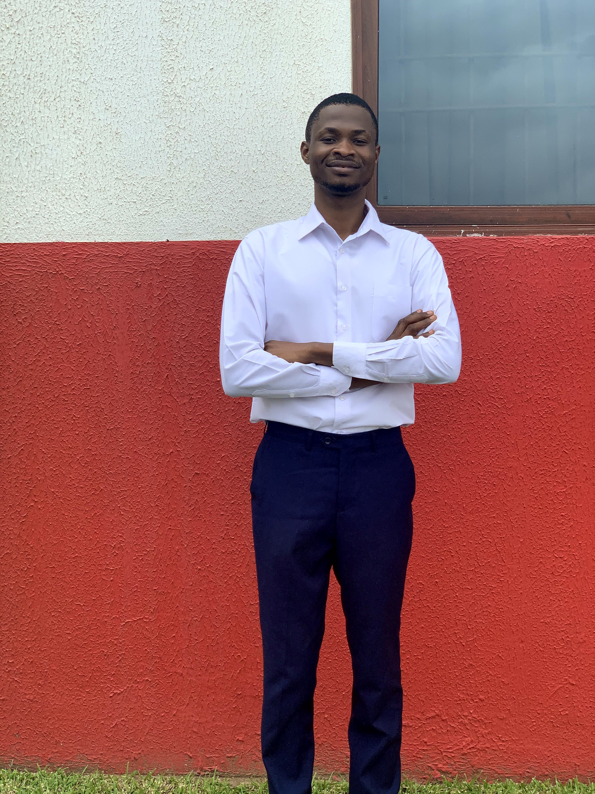

PhD Candidate in Mathematics
The University of Alabama

My research focuses on numerical methods for partial differential equations, particularly discontinuous Galerkin finite element methods (DG-FEM) and high-order time integration methods.
I study stability and error analysis of Runge–Kutta discontinuous Galerkin methods, Fourier analysis of filtered DG schemes, and efficient time-stepping algorithms for high-order PDE discretizations.
Email: batawiah@crimson.ua.edu
My research is in numerical analysis for partial differential equations, with a focus on high-order discretization methods and time integration schemes. In particular, I study discontinuous Galerkin methods for time-dependent PDEs and their stability and accuracy properties.
Current research topics include:
Benjamin Atawiah
Department of Mathematics
The University of Alabama
Tuscaloosa, AL
Email: batawiah@crimson.ua.edu